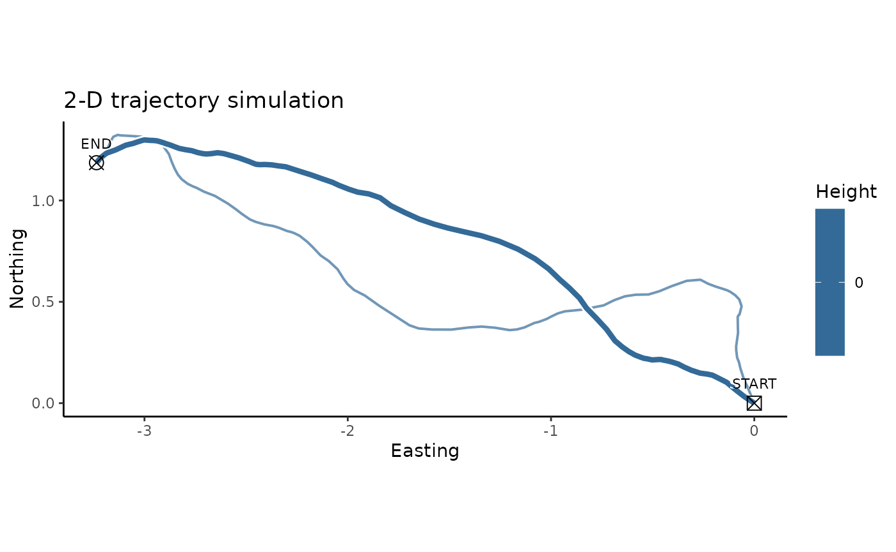

Since movement in 2-D is a special case of movement in 3-D, the eRTG3D algorithm also supports two-dimensional simulations. The underlying data structure of the algorithm remains in three-dimensional, with the third dimension (z) being constant, as for example zero. This approach guarantees a seamless transition between 2-D and 3-D simulations. Therefore, two P and Q probabilities are be extracted from 2D and 3D trajectories, then a combined simulation can take place.
trajectory.3D <- sim.crw.3d(nStep = 100, rTurn = 0.99, rLift = 0.99, meanStep = 0.1)
To simulate in 2-D the third dimension of the trajectory is set to zero:
trajectory.2D <- trajectory.3D trajectory.2D$z <- 0 head(trajectory.2D) #> x y z #> 1 0.00000000 0.00000000 0 #> 2 -0.04976943 0.03299199 0 #> 3 -0.09460812 0.06814134 0 #> 4 -0.13551572 0.10242178 0 #> 5 -0.16315900 0.11669027 0 #> 6 -0.19171655 0.13107099 0
If the original trajectory is already two-dimensional, a third column z has to be added: trajectory.2D$z <- 0.
Now the workflow is the same as in 3-D, described in the standard workflow vignette:
Note: Since it is not feasible to use a DEM (DEM = demRaster) in 2-D simualtions, the adding of a DEM in the somulations will result in dead ends. A BG layer (BG = bgRaster) with a binary mask or continous probabilities for the simulation area can be passed (e.g. water bodies, nutrition sources, …).
simulation.2D <- reproduce.track.3d(trajectory.2D)
And plotting the results:
plot2d(trajectory.2D, simulation.2D, titleText = "2-D trajectory simulation")
